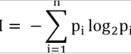

визуальная поддержка лекции
© Игорь Григорьевич Пеймер, май 2025 г
Информация — сведения об объектах и явлениях окружающей среды, их параметрах, свойствах и состоянии, которые уменьшают имеющуюся о них степень неопределенности, неполноты знаний.
Информация:
Для обмена информацией:
Оценка информации:
За единицу количества информации принимается такое ее количество, которое содержит сообщение, уменьшающее неопределенность в два раза.
bit — единица количества информации.
1 byte = 8 bit
1 Килобайт (Кбайт) = 1024 байт = 210байт
1 Мегабайт (Мбайт) = 1024 Кбайт = 210Кбайт = 220байт
1 Гигабайт (Гбайт) = 1024 Мбайт = 210Мбайт = 230байт
1 Терабайт (Тбайт) = 1024 Гбайт = 210Гбайт = 240байт
1 Петабайт (Пбайт) = 1024 Тбайт = 210Тбайт = 250байт
Простейшие способы представления данных:
Каждому символу ставится в соответствие двоичный код — совокупность нулей и единиц.
Подходы к хранению графических данных:
Цветовая модель — это правило, по которому может быть вычислен цвет.
Два подхода к измерению информации:
Информативность сообщения характеризуется содержащейся в нем полезной информацией — которая
снимает полностью или уменьшает неопределенность какой-либо ситуации.
Неопределенность некоторого события — это количество возможных исходов данного события.
I = –log2р
I — количество информации, p — вероятность события
В случае событий с различными вероятностями:
Всякое сообщение можно закодировать с помощью конечной последовательности символов некоторого алфавита.
Информационный объект — обобщающее понятие, описывающее различные виды объектов.
Простые информационные объекты: звук, изображение, текст, число.
Комплексные (структурированные) информационные объекты: элемент, база данных, таблица,
гипертекст,
гипермедиа.
Информация содержится везде.